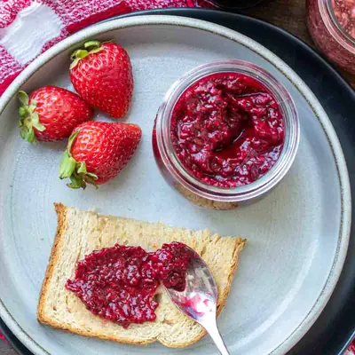

Strawberry Chia Seed Jam

Ingredients
- 2 cups frozen strawberries
- ¼ cup water
- 1 pinch sea salt
- 1 tablespoons fresh orange juice (can also use lemon)
- 1-2 tablespoons sweetener of choice (I used maple syrup (optional for added sweetness)
- 2-3 tablespoons chia seeds (depending on how thick you want it)
Steps
- Add the fruit, water and salt to a pot and cook over medium heat until it is softens. About 5 minutes. Once soft, mash it to get the consistency you want. I like it smooth with a few small chunks.
- Add the orange juice, sweetener and chia seeds if using and mix well. Remove from heat and allow to cool. It thickens more as it cools and will be even thicker the next day.
- Store in the fridge in an airtight container and serve!
Recipe by Anjali Shah, from The Picky Eater. Saved here for personal use; the original has the full notes, tips and photos. Open original